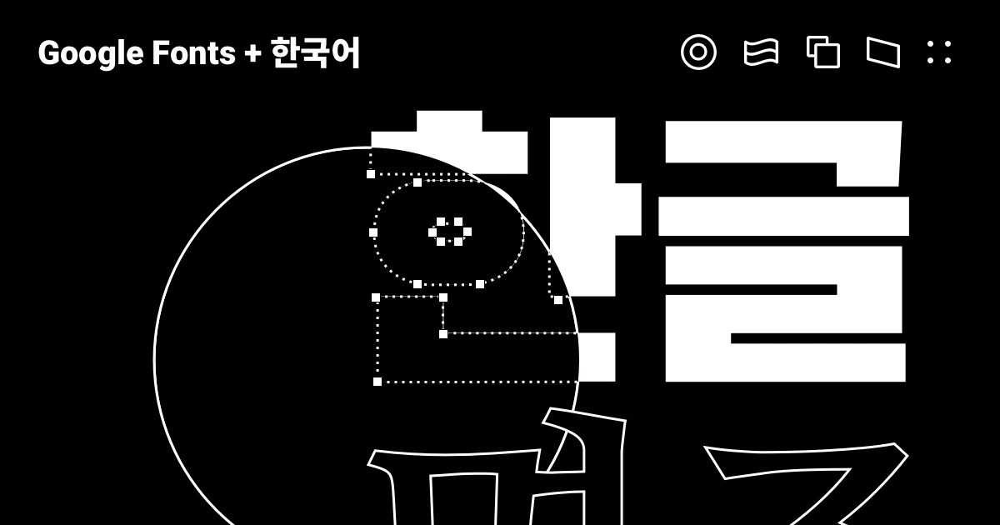
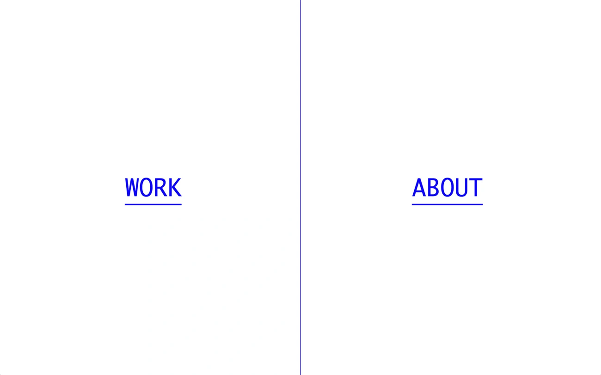
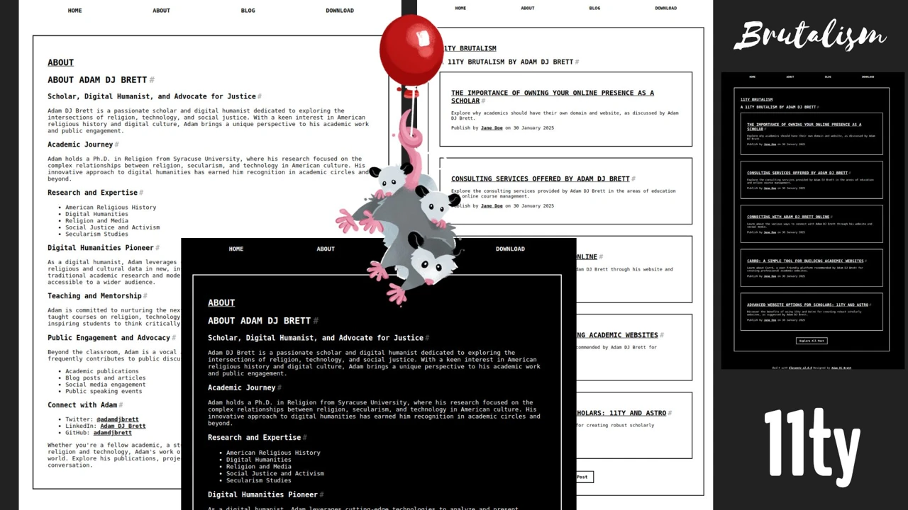
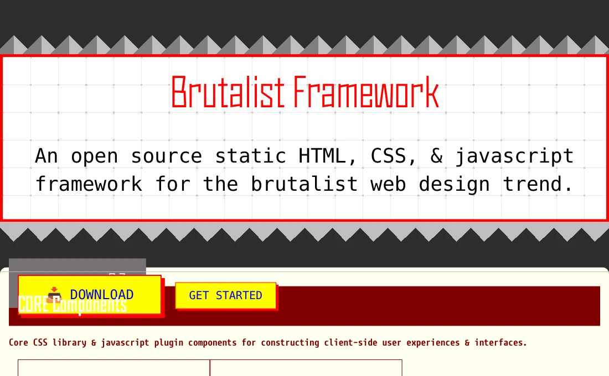
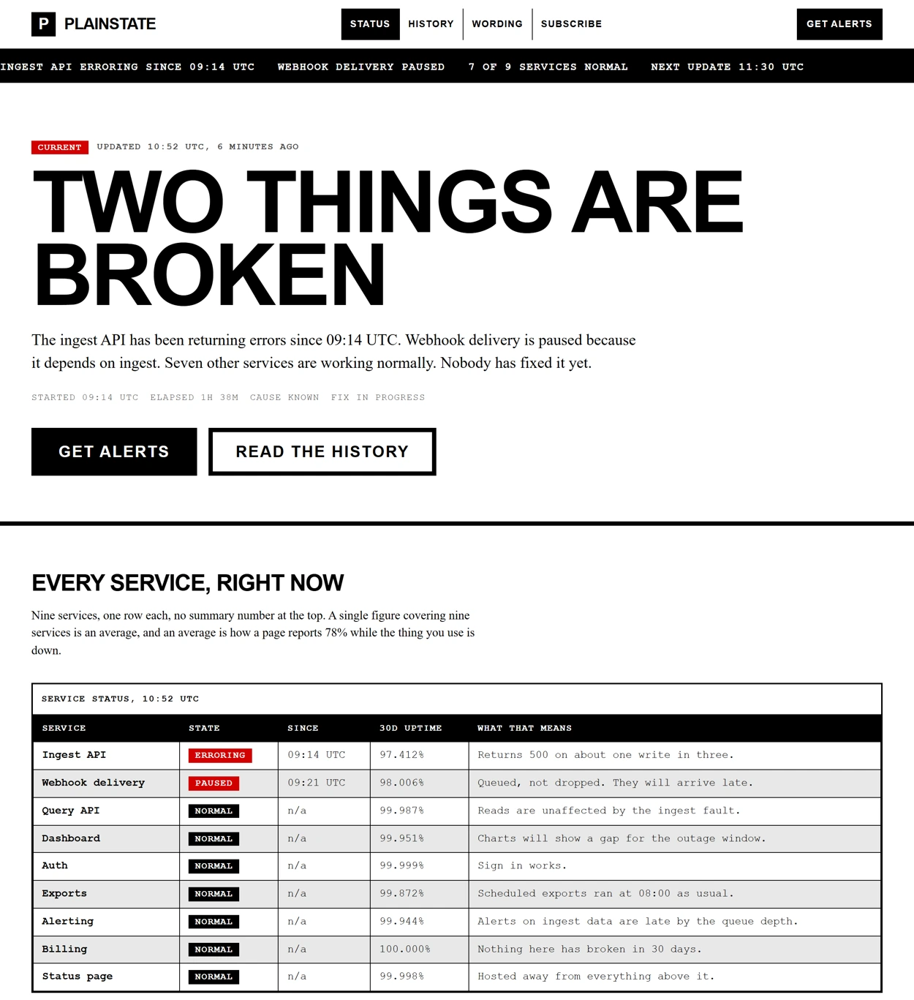

選定理由・高評価
黒い画面をハングル一字が大きく占めます。パスカル・ドゥヴィルの選集「Brutalist Websites」に収録された書体見本サイト。掲載図は主要な文字と図形を使った公式キービジュアルです。
作品・制作の例7件を紹介しています。実作品画像5点、参照・関連画像0点。画像の収集は継続中です。
現代の画面表現・説明用の分類
Web brutalism
大きな文字、むき出しに見えるリンク、飾りを抑えたページ。ウェブ・ブルータリズムには、こうした画面を指す使い方があります。ただし、意味は制作者や紹介者によって違います。
実作品を見る

画像を表示できませんでした。下の出典ページで確認できます。
Google Fonts / 2018年
黒い画面をハングル一字が大きく占めます。パスカル・ドゥヴィルの選集「Brutalist Websites」に収録された書体見本サイト。掲載図は主要な文字と図形を使った公式キービジュアルです。
Google Fonts／WebPに変換
出典で作品・資料を見る ↗実作品を見る

画像を表示できませんでした。下の出典ページで確認できます。
アクセル・ゲダン / 2018年頃
白い画面を線で二分し、WORKとABOUTの二つのリンクだけを大きく配置しています。作者は専門アーカイブの取材で、インターンに応募するために紙で設計し、Brutalist Frameworkで実装したと話しています。
© 2018 gueudaxe（Axel Gueudin）。掲載誌が記録したサイトの表示画面を縮小してWebP化。
出典で作品・資料を見る ↗実作品を見る

画像を表示できませんでした。下の出典ページで確認できます。
アダム・DJ・ブレット / 2024年に作者が紹介／掲載図は公開版
作者自身がブルータリズムを掲げたブログのひな形です。同じ記事を白地と黒地で比べると、装飾の少ない枠、等幅の文字、広い余白がどちらにも残ります。
Adam DJ Brett／WebPに変換
出典で作品・資料を見る ↗実作品を見る

画像を表示できませんでした。下の出典ページで確認できます。
ブラッド・フォーゲルストロム / 2026年公開の2.7版
ウェブ・ブルータリズムのための制作道具として作者が発表したサイト。見出しの大きさと色面の切り替わりで情報のまとまりを見せます。
Brad Fogelstrom／配布版HTML・CSSの画面向け静止表示／WebPに変換
出典で作品・資料を見る ↗実作品を見る

画像を表示できませんでした。下の出典ページで確認できます。
RampStack Co. / 2026年
障害が二つ起きていることを、紙面の見出しのような巨大な一文で伝えます。その下にはサービスごとの状況を並べた罫線の表。作者がウェブ・ブルータリズムの考え方を動くページとして公開した、架空のサービスの稼働状況画面です。
© 2026 RampStack Co.。公式のデモ画面を縮小してWebP化。
出典で作品・資料を見る ↗歴史上の定評ある代表作と断定する選定ではありません。制作側の説明や教材から、表現が確かめられる例を区別して掲載しています。
参考資料（ウェブサイトを選ぶ編集企画）
一つの定義ではなく、選者が集めた多様なサイトを見る資料です。
作品・資料の出典を見る ↗原題：Brutalist Websites
ブルータリスト・ウェブサイツ編集部 / 継続更新 / ウェブ作品の選集
日本語の見出しは読みやすさのための呼び名・説明名です。原題は記録欄に示しています。
画像の転載条件は未確認。出典の公開は転載許諾ではありません。
参考教材（執筆者による制作指針）
文字を読めること、リンクやボタンが分かることを重視する立場です。
作品・資料の出典を見る ↗原題：Guidelines for Brutalist Web Design
デイヴィッド・ブライアント・コープランド / 2025年6月1日更新の記録 / 指針と実装されたウェブページ
日本語の見出しは読みやすさのための呼び名・説明名です。原題は記録欄に示しています。
画像の転載条件は未確認。出典の公開は転載許諾ではありません。
作者公開のサイト用キービジュアル
黒い画面をハングル一字が大きく占めます。パスカル・ドゥヴィルの選集「Brutalist Websites」に収録された書体見本サイト。掲載図は主要な文字と図形を使った公式キービジュアルです。
作品・資料の出典を見る ↗原題：Google Fonts + 한국어
Google Fonts / 2018年 / 作者公開のサイト用キービジュアル
ウェブサイトのトップ画面
白い画面を線で二分し、WORKとABOUTの二つのリンクだけを大きく配置しています。作者は専門アーカイブの取材で、インターンに応募するために紙で設計し、Brutalist Frameworkで実装したと話しています。
作品・資料の出典を見る ↗原題：AXEL G. — Portfolio
アクセル・ゲダン / 2018年頃 / ウェブサイトのトップ画面
サイトの公式紹介図
作者自身がブルータリズムを掲げたブログのひな形です。同じ記事を白地と黒地で比べると、装飾の少ない枠、等幅の文字、広い余白がどちらにも残ります。
作品・資料の出典を見る ↗原題：11ty Brutalism
アダム・DJ・ブレット / 2024年に作者が紹介／掲載図は公開版 / サイトの公式紹介図
作者が公開したHTML・CSSの静止表示
ウェブ・ブルータリズムのための制作道具として作者が発表したサイト。見出しの大きさと色面の切り替わりで情報のまとまりを見せます。
作品・資料の出典を見る ↗原題：Brutalist Framework STATIC
ブラッド・フォーゲルストロム / 2026年公開の2.7版 / 作者が公開したHTML・CSSの静止表示
ウェブサイトのデモ画面
障害が二つ起きていることを、紙面の見出しのような巨大な一文で伝えます。その下にはサービスごとの状況を並べた罫線の表。作者がウェブ・ブルータリズムの考え方を動くページとして公開した、架空のサービスの稼働状況画面です。
作品・資料の出典を見る ↗原題：Plainstate — Brutalist Web Theme
RampStack Co. / 2026年 / ウェブサイトのデモ画面
作品を集めるブルータリスト・ウェブサイツと、読みやすさや基本操作を重視するデイヴィッド・ブライアント・コープランドの指針を分けて読みます。派手な見た目だけを共通ルールにはできません。
白黒だけとは限りません。色の少なさが必須でもありません。
文字の大きさ、下線、見出しの順序を確かめます。
装飾が少ないことと、操作が乱暴なことは別です。
リンク、スクロール、戻る操作が自然に使えるか見ます。
コンクリート建築のブルータリズムから言葉を借りていますが、同じ材料や組織を持つ歴史運動ではありません。ネオ・ブルータリズムの太い枠や影とも区別します。
読めない文字や壊れた操作を、表現の名前だけで正当化しないようにしましょう。
制作者が公開したウェブ画面から、文字、余白、境界線の使い方と、操作部分の見せ方を比べます。
作品・制作の例7件を紹介しています。実作品画像5点、参照・関連画像0点。画像の収集は継続中です。